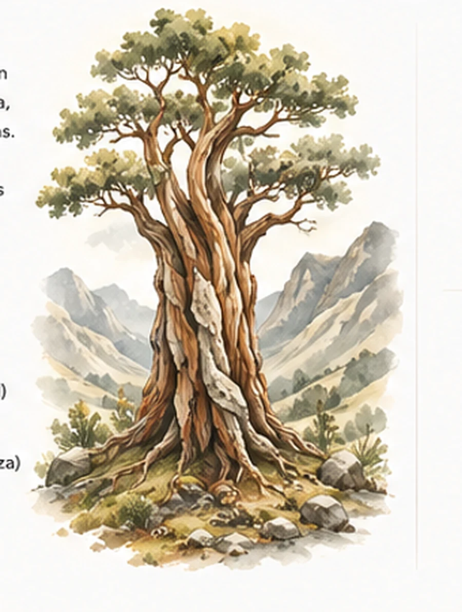

Intereses que abren caminos
¿Qué te gustaría explorar hoy?
Elige algo que te cause curiosidad. Queñal empezará con tres momentos y podrá proponer más cuando la experiencia lo justifique.

Primero te escuchamos
¿Por qué puerta empezamos?
Elige un universo. Verás pocos temas a la vez y podrás cambiar cuando quieras.
Elige un tema para comenzar
Escena 1 de 3
Lista para comenzar
Desafío amable
Lo que aprende el motor
Registra localmente el tema elegido y evidencias de esta actividad: escuchar, pausar, intentar, pedir apoyo, responder, crear o transferir. El interés orienta la experiencia, pero no se convierte en talento, diagnóstico ni calificación. La persona adulta decide si guarda o exporta el informe.
Abrir informe familiar de esta sesión